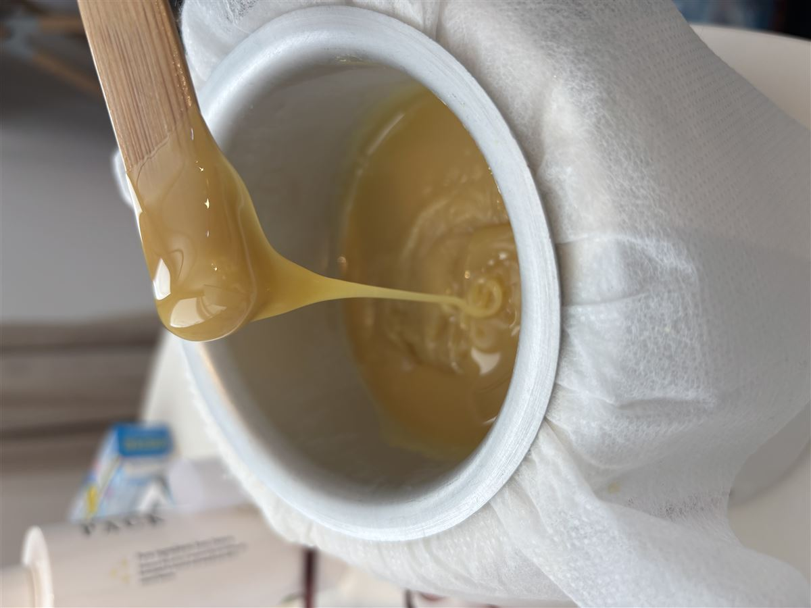
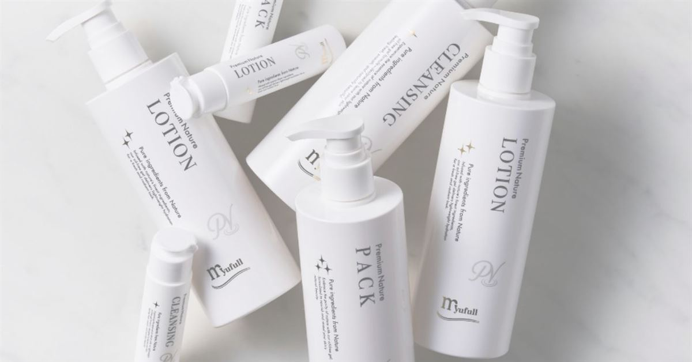

マツヤニパック
（バイオウォーミーパック）
あたためて、はがす。
昔ながらの知恵が生きたパック。

マツヤニパック（バイオウォーミーパック／松ヤニパック）は、天然のマツヤニを主原料にしたパックを、あたたかいまま肌にのせて、固まったらはがすという施術です。
毛穴にたまった汚れや古い角質、お顔の産毛までまとめてオフ。はがしたあとの、つるんとした肌ざわりに驚かれる方がとても多い、当サロンの看板メニューです。天然のマツヤニを使ったこのケアが受けられるのは、久留米ではハダノコトサロンだけです。久留米インターから車で3分、駐車場もございます。鳥栖・佐賀・日田方面からも通っていただけます。

マツヤニパックの5つの効果
- 毛穴の奥の汚れを取る
温めて浮かせた皮脂や汚れを、しっかり取り除きます - 古い角質を除去する
肌の生まれ変わりを妨げる古い角質をオフします - 産毛をケアする
自己処理では難しい産毛も一緒にオフします - 顔ダニの過度な繁殖を予防する
清潔な肌環境を保ちやすくします - 血行を促す
温熱効果でめぐりをサポートします
はじめての方は、2回に分けて
はじめてマツヤニパックを受けられる方には、2回セットの「はじめてのマツヤニパック」をご用意しています。1回目でお肌の状態を確かめ、パッチテストの結果を見てから、2回目で本格的なケアに入ります。
- 1回目｜ジェルエステ＋パッチテスト
カウンセリングでお肌の状態をうかがい、パッチテストで確認します - 2回目｜マツヤニパック＋EMS美顔器
パッチテストの結果を確かめてから、本格的なケアに入ります
3回目以降は「いつものマツヤニパック」に移ります。コースのご契約はなく、そのつどのお支払いです。
料金
- はじめてのマツヤニパック（初めての方・2回セット）8,000円
- いつものマツヤニパック（3回目以降の定期ケア）7,500円
- マツビオセット（マツヤニパック×ビオスチーム）11,500円
- マツヤニパック＋EMS美顔器10,000円
※すべて税込・都度払い。コースのご契約はありません。
※マツビオセットはビオスチーム（発酵野草蒸し）との組み合わせメニューです。
ホームケアについて
サロンでのケアと同じくらい、毎日のおうちでのお手入れを大切にしています。当サロンはミューフル化粧品の正規取扱店（MEPマイスター取扱店）。お手入れが続く秘訣は、結果が出ることで楽しくなること。あなたのペースに合う続け方を、一緒に見つけていきます。

よくあるご質問
気になるご質問をタップすると、お答えが開きます。
痛みはありますか？
「少しチクッとする」とおっしゃる方がほとんどです。産毛や古い角質をパックの粘着力で一緒にオフするため、はじめての方ほど刺激を感じやすい傾向があります。感じ方には個人差がありますので、施術中も遠慮なくお声かけください。
施術のあと、赤みが出ることはありますか？
一時的に赤みが出る方がいらっしゃいます。数時間から半日ほどで落ち着く方が多いですが、こちらも個人差があります。結婚式やパーティーなど大切なご予定がある場合は、3〜5日ほど前までに受けていただくと安心です。
翌日に皮がむけてきました。大丈夫ですか？
数日で落ち着く方が多いです。むけてきた部分は無理にはがさず、やさしく保湿してお過ごしください。ご来店いただいた方には施術後の過ごし方もお伝えしていますので、気になるときはいつでもご相談ください。
敏感肌ですが、受けられますか？
お肌の状態は本当に人それぞれですので、まずはパッチテストで確認させてください。目立たない部分に少量つけて、反応を見ていきます。その結果やその日のお肌の状態によっては、別のメニューからお試しいただくようご提案することもあります。
どのくらいのペースで通うのがいいですか？
2週間に1回のペースを理想として、少なくとも月に1回をおすすめしています。お肌の状態やご都合によって続けやすいペースは変わりますので、そのつどご相談しながら決めていきます。
顔以外もできますか？背中やうなじが気になります
はい。マツヤニパックは全身にお使いいただけます。結婚式を控えた方からは、ドレスから見える背中やうなじのご相談をよくいただきます。ほかにデコルテ、脇や手足の産毛のケアなど、気になる部位をご相談ください。
いつものスキンケアは、どうしたらいいですか？
当サロンはミューフル化粧品（ノンオイル・ノンケミカル・弱酸性・ノンアルコール）の正規取扱店ですが、いきなりすべてを買い替えていただく必要はありません。今お使いのものをうかがいながら、必要なものから少しずつご案内しています。
このほかのご質問には、noteの記事「「マツヤニパック、ちょっと怖い」そんなあなたへ」でもお答えしています。